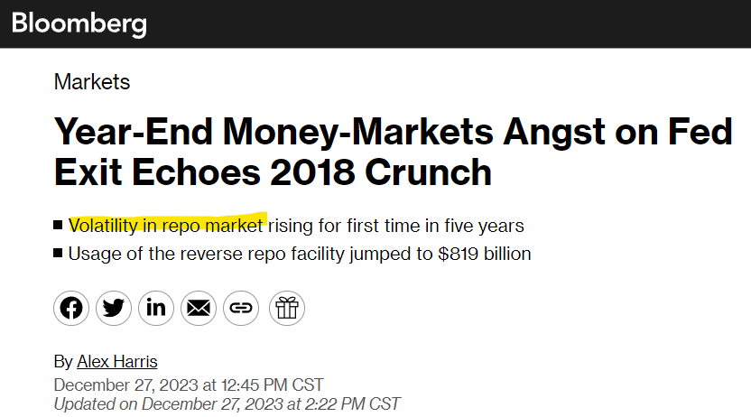

Rate Spikes in the Market for Repurchase Agreements#
What is the role of the repo market and why is it important?#
The market for repurchase agreements, commonly known as the repo market, serves as a cornerstone for short-term financing among financial institutions. This market enables entities, including banks, dealers, money market funds, insurance companies, pension funds, and other entities, to obtain liquidity on an overnight basis or for other short tenures, thereby ensuring operational continuity. Its collateralized nature minimizes credit risk, making it a preferred avenue for secure, short-term lending and borrowing.
Moreover, the repo market is critical in implementing monetary policy, especially considering the diminished role of the unsecured interbank market compared to the secured market following the 2007-2008 financial crisis. Its central role in providing liquidity and facilitating monetary policy execution underscores the necessity of the repo market’s efficient functioning for financial stability and the broader economy. Disruptions within this market can have widespread impacts, affecting various financial participants, including banks, money market funds, hedge funds, and corporations.
What is a repurchase agreement?#
A repurchase agreement, often referred to as a repo, is a form of short-term borrowing mainly used in the money markets. A repurchase agreement can be visualized as follows. The following Figure is from Fixed Income Securities, by Veronsi. This demonstrates a trader purchasing a bond in the market and financing the purchase via a repurchase agreement.
At Time \(t\)#
Choosing Bond to Finance:
The TRADER initiates the transaction by purchasing a bond from the MARKET at a price \(P_t\).
The TRADER then agrees to sell this bond to the REPO DEALER while simultaneously agreeing to repurchase it at a future date for a predetermined price.
Exchange of Bond for Cash:
The TRADER delivers the bond to the REPO DEALER.
In return, the REPO DEALER pays the TRADER an amount equal to \(P_t\) minus a “haircut.” The haircut is a discount on the bond’s value, which serves as a protection for the dealer against the risk of the bond’s price decline.
At Time \(T = t + n \text{ days}\)#
Repurchase of the Bond:
At the end of the repo term, the TRADER repurchases the bond from the REPO DEALER.
The repurchase price is calculated as \((P_t - \text{haircut}) \times \left(1 + \frac{\text{repo rate} \times n}{360}\right)\), where the repo rate is the interest rate agreed upon for the repo, and \(n\) is the number of days the repo agreement lasts.
Unwinding Bond Financing:
The TRADER pays the calculated repurchase price to the REPO DEALER and receives the bond back.
If the TRADER does not refinance the bond, the TRADER sells the bond back to the MARKET for a price of \(P_T\).
The repo transaction allows the TRADER to obtain short-term financing by temporarily transferring a security to a REPO DEALER in exchange for cash, with the agreement to buy back the security at a later date for a slightly higher price, the difference being equivalent to the interest on the loan. The repo rate effectively acts as the interest rate on the cash borrowed by the TRADER.
In quantitative finance, repos are commonly used to raise short-term capital. They are also used for leveraged trades and managing liquidity. Repos are secured loans because they involve the transfer of securities; they are usually seen as low-risk instruments because the terms of the transaction are secured by the collateral, which is the bond in this case. That said, they can be used to create highly levered positions which are not low risk.
The haircut on the repo pins down the maximum amount of leverage that can be obtained with the repo. Such a position is highly risky.
and $\( \text{Return on capital for TRADER} = \frac{P_T - P_t - \text{Repo interest}}{\text{Haircut}} \)$
Consider some back-of-the-envelop calculations within a highly simplified 2-period model to demonstrate this:
Example 1: No leverage, interest rates go down from 4% to 3%
Example 2: Full leverage, interest rates go down from 4% to 3%
Example 3: Full leverage, interest rates go up from 4% to 5%
Money market dislocations and the repo rate spikes of 2018-2019#
Repo rates are the interest rates at which financial institutions borrow or lend funds via repurchase agreements (repos). In recent years, there have been several notable spikes in these rates. The most significant spike occurred in September 2019, although smaller spikes also occurred throughout 2018 and 2019. A repo spike refers to a sudden, substantial increase in repo rates within the financial market. These spikes indicate an abrupt imbalance in the supply and demand for funds in the repo market, leading to an increase in borrowing costs. Such spikes can disrupt the financial system and may signal deeper issues related to liquidity and funding stress.
Additionally, these rate spikes can be seen as dislocations in the money markets. Specifically, these repo spikes represented significant deviations between repo rates and the interest on reserve balances or the Federal Reserve’s Overnight Reverse Repo Facility rate (ON/RRP rate). These dislocations imply potential arbitrage opportunities, suggesting that institutions capable of earning interest on reserves or with access to the Fed’s ON/RRP facility should theoretically show no preference between using these facilities and lending in the repo markets. Since lending in repo markets typically involves overcollateralization with Treasury securities and occurs overnight, repo market rates should align closely with other near risk-free rates. Understanding the causes of these deviations is crucial for grasping their implications for the financial sector.
Relationship to Quantitative Investors#

What is a basis trade. From this Reuters article, they say:
Hedge funds’ short positions in some Treasuries futures - contracts for the purchase and sale of bonds for future delivery - have recently hit record highs as part of so-called basis trades, which take advantage of the premium of futures contracts over the price of the underlying bonds, analysts have said.
The trades - typically the domain of macro hedge funds with relative value strategies - consist of selling a futures contract, buying Treasuries deliverable into that contract with repurchase agreement (repo) funding, and delivering them at contract expiry.
The involvement of hedge funds and other asset management companies in this space have receive a lot of attention recently. Some examples:
Citadel’s Ken Griffin warns against hedge fund clampdown to curb basis trade risk
Citadel and Its Peers Are Piling Into the Same Trades. Regulators Are Taking Notice
Fed’s reverse repo facility drawdown looms large in balance sheet debate
Fed economists sound alarm on hedge funds gaming US Treasuries
Understanding Repo Markets Are Important to Understanding the Risks involved in this Trade#
In this homework assignment, we’ll create some charts to better understand this market. I also recommend reading this paper, Kahn et al (2023). “Anatomy of the Repo Rate Spikes in September 2019.” Journal of Financial Crises 5, no. 4 (2023): 1-25.
We’ll replicate Figure 1 from this paper.
import pandas as pd
import numpy as np
from matplotlib import pyplot as plt
import load_repo_data
from pathlib import Path
import config
OUTPUT_DIR = Path(config.output_dir)
DATA_DIR = Path(config.data_dir)
Repo Rates and Fed Funds Rates#
Replicate Figure 1 from “Anatomy of the Repo Rate Spikes”
load_repo_data.series_descriptions
{'DPCREDIT': 'Discount Window Primary Credit Rate',
'EFFR': 'Effective Federal Funds Rate',
'OBFR': 'Overnight Bank Funding Rate',
'SOFR': 'SOFR',
'IORR': 'Interest on Required Reserves',
'IOER': 'Interest on Excess Reserves',
'IORB': 'Interest on Reserve Balances',
'DFEDTARU': 'Federal Funds Target Range - Upper Limit',
'DFEDTARL': 'Federal Funds Target Range - Lower Limit',
'WALCL': 'Federal Reserve Total Assets',
'TOTRESNS': 'Reserves of Depository Institutions: Total',
'TREAST': 'Treasuries Held by Federal Reserve',
'CURRCIR': 'Currency in Circulation',
'GFDEBTN': 'Federal Debt: Total Public Debt',
'WTREGEN': 'Treasury General Account',
'RRPONTSYAWARD': 'Fed ON/RRP Award Rate',
'RRPONTSYD': 'Treasuries Fed Sold In Temp Open Mark',
'RPONTSYD': 'Treasuries Fed Purchased In Temp Open Mark',
'WSDONTL': 'SOMA Sec Overnight Lending Volume',
'MY_RPONTSYAWARD': 'Fed ON/RP Award Rate',
'Gen_IORB': 'Interest on Reserves',
'ONRRP_CTPY_LIMIT': 'Counter-party Limit at Fed ON/RRP Facility',
'ONRP_AGG_LIMIT': 'Aggregate Limit at Fed Standing Repo Facility',
'REPO-TRI_AR_OO-P': 'Tri-Party Average Rate: Overnight/Open (Preliminary)',
'REPO-TRI_TV_OO-P': 'Tri-Party Transaction Volume: Overnight/Open (Preliminary)',
'REPO-TRI_TV_TOT-P': 'Tri-Party Transaction Volume: Total (Preliminary)',
'REPO-DVP_AR_OO-P': 'DVP Service Average Rate: Overnight/Open (Preliminary)',
'REPO-DVP_TV_OO-P': 'DVP Service Transaction Volume: Overnight/Open (Preliminary)',
'REPO-DVP_TV_TOT-P': 'DVP Service Transaction Volume: Total (Preliminary)',
'REPO-DVP_OV_TOT-P': 'DVP Service Outstanding Volume: Total (Preliminary)',
'REPO-GCF_AR_OO-P': 'GCF Repo Service Average Rate: Overnight/Open (Preliminary)',
'REPO-GCF_TV_OO-P': 'GCF Repo Service Transaction Volume: Overnight/Open (Preliminary)',
'REPO-GCF_TV_TOT-P': 'GCF Repo Service Transaction Volume: Total (Preliminary)',
'FNYR-BGCR-A': 'Broad General Collateral Rate',
'FNYR-TGCR-A': 'Tri-Party General Collateral Rate'}
new_labels = {
'REPO-TRI_AR_OO-P':'Tri-Party Overnight Average Rate',
'RRPONTSYAWARD': 'ON-RRP facility rate',
'Gen_IORB': 'Interest on Reserves', # This series uses FRED's Interest on
# Reserve Balances series. However, this doesn't go back very far, so it is
# backfilled with interest on excess reserves when necessary.
}
df = load_repo_data.load_all(data_dir = DATA_DIR)
The following plot show the effective fed funds rate (from FRED), the tri-party overnight average rate (from the OFR series REPO-TRI_AR_OO-P), and the shaded region shows the lower and upper limit of the federal funds target range (DFEDTARL and DFEDTARU).
<Axes: xlabel='DATE'>

In the following plot, we zoom in a little to see just how large these spikes were.
<Axes: xlabel='DATE'>

Normalize rates to be centered at the fed funds target window midpoint.
Now, plot the series that is normalized by the fed funds target midpoint.

Now, let’s consider interest on reserves as well as the ON-RRP rate, as these in theory put bounds on the repo rate.

<matplotlib.legend.Legend at 0x24ec8c430e0>

<matplotlib.legend.Legend at 0x24ec8d1f470>

df['SOFR-IORB'] = df['SOFR'] - df['Gen_IORB']
df.loc['2018':'2020', ['SOFR-IORB']].plot()
<Axes: xlabel='DATE'>

df.loc['2018':, ['SOFR-IORB']].plot()
<Axes: xlabel='DATE'>

Understanding this plot#
Now, let’s spend some time trying to understand this plot.
Reserve Levels vs Spikes#
First of all, depository intitutions have a choice between keeping their reserves at the Fed and earning interest on reserve balances or lending the money into repo. When the repo rates were spiking in 2018 and 2019, I would imagine that total reserve levels would be low.
df['net_fed_repo'] = (df['RPONTSYD'] - df['RRPONTSYD']) / 1000
df['triparty_less_fed_onrrp_rate'] = (df['REPO-TRI_AR_OO-P'] - df['RRPONTSYAWARD']) * 100
df['total reserves / currency'] = df['TOTRESNS'] / df['CURRCIR']
fig, ax1 = plt.subplots()
ax2 = ax1.twinx()
df[['TOTRESNS']].rename(
columns=load_repo_data.series_descriptions
).plot(ax=ax1,color='g')
ax1.set_ylabel('$ Billions')
ax2.set_ylabel('Basis Points')
ax1.legend(loc='center left', bbox_to_anchor=(1, 1.1))
df[['triparty_less_fed_onrrp_rate']].rename(
columns={'triparty_less_fed_onrrp_rate':'Tri-Party - Fed ON/RRP Rate'}
).plot(ax=ax2)
ax2.legend(loc='center left', bbox_to_anchor=(1, 1));

Now, let’s normalize by currency in circulation, so as to account for the normal growth in the economy or the financial system. This is done because total reserves is not stationary.
fig, ax1 = plt.subplots()
ax2 = ax1.twinx()
df[['total reserves / currency']].plot(ax=ax1,color='g')
df[['triparty_less_fed_onrrp_rate']].rename(
columns={'triparty_less_fed_onrrp_rate':'Tri-Party - Fed ON/RRP Rate'}
).plot(ax=ax2)
ax1.set_ylabel('Ratio')
ax2.set_ylabel('Basis Points')
ax1.legend(loc='center left', bbox_to_anchor=(1, 1.1))
ax2.legend(loc='center left', bbox_to_anchor=(1, 1));
# Total Reserves held by depository institutions, divided by currency in circulation

Fed Repo and Reverse Repo Facility Takeup#
df[['RPONTSYD','RRPONTSYD']].rename(
columns=load_repo_data.series_descriptions
).plot(alpha=0.5)
<Axes: xlabel='DATE'>

# Net Fed Repo Lending (positive is net lending by the Fed.
# Negative is the use of the reverse repo facility.)
df[['net_fed_repo']].plot()
plt.ylabel('$ Trillions');

# TODO
# # Net Fed Repo Lending (positive is net lending by the Fed.
# # Negative is the use of the reverse repo facility.)
# df.loc['2023',['net_fed_repo']].plot()
# plt.ylabel('$ Trillions');
df[['net_fed_repo', 'triparty_less_fed_onrrp_rate']].plot()
plt.ylim([-50,100])
(-50.0, 100.0)

The Fed is lending money when the repo rate is spiking. When the repo rate is low relative to the ON/RRP rate, usage of the ON/RRP facility goes up, as can be seen here.
fig, ax1 = plt.subplots()
ax2 = ax1.twinx()
df[['net_fed_repo']].plot(ax=ax1,color='g')
df[['triparty_less_fed_onrrp_rate']].plot(ax=ax2)
<Axes: xlabel='DATE'>

How should we define a repo spike?#
Now, I turn to the question of how to define a repo rate spike.
Fed Fund’s Target Range#
The first way to approach this is to just look at when the triparty rate exceeded the upper bound of the fed’s federal funds rate target range.
Tri-Party Ave vs Fed Upper Limit
df['is_tri_above_fed_upper'] = df['REPO-TRI_AR_OO-P'] > df['DFEDTARU']
df.index[df['is_tri_above_fed_upper']]
DatetimeIndex(['2018-03-29', '2018-04-02', '2018-04-03', '2018-05-31',
'2018-06-01', '2018-06-04', '2018-06-29', '2018-11-15',
'2018-11-30', '2018-12-06', '2018-12-07', '2018-12-17',
'2018-12-18', '2018-12-19', '2018-12-31', '2019-01-02',
'2019-01-03', '2019-01-31', '2019-02-28', '2019-03-29',
'2019-04-30', '2019-05-01', '2019-07-03', '2019-07-05',
'2019-07-31', '2019-09-16', '2019-09-17', '2019-09-18',
'2019-09-30', '2019-10-16', '2020-03-04', '2020-03-16',
'2020-03-17'],
dtype='datetime64[ns]', name='DATE', freq=None)
len(df.index[df['is_tri_above_fed_upper']])
33
SOFR vs Fed Upper Limit
df['is_SOFR_above_fed_upper'] = df['SOFR'] > df['DFEDTARU']
len(df.index[df['is_SOFR_above_fed_upper']])
42
df.index[df['is_SOFR_above_fed_upper']]
DatetimeIndex(['2018-04-03', '2018-04-11', '2018-04-16', '2018-04-17',
'2018-04-30', '2018-05-01', '2018-05-15', '2018-05-31',
'2018-06-01', '2018-06-04', '2018-06-29', '2018-07-02',
'2018-11-15', '2018-11-16', '2018-11-30', '2018-12-04',
'2018-12-06', '2018-12-07', '2018-12-17', '2018-12-18',
'2018-12-19', '2018-12-31', '2019-01-02', '2019-01-03',
'2019-01-31', '2019-02-28', '2019-03-29', '2019-04-30',
'2019-05-01', '2019-07-02', '2019-07-03', '2019-07-05',
'2019-07-31', '2019-09-16', '2019-09-17', '2019-09-18',
'2019-09-25', '2019-09-30', '2019-10-16', '2019-10-31',
'2020-03-16', '2020-03-17'],
dtype='datetime64[ns]', name='DATE', freq=None)
SOFR vs Interest of Reserves
This measure is good because it represents a kind of arbitrage opportunity. Either leave money at Fed to earn interest, or put money into repo market. This is what the paper, “Reserves were not so amply after all” uses.
df[['SOFR-IORB']].dropna(how='all').plot()
<Axes: xlabel='DATE'>

df['is_SOFR_above_IORB'] =df['SOFR-IORB'] > 0
len(df.index[df['is_SOFR_above_IORB']])
257
df.index[df['is_SOFR_above_IORB']]
DatetimeIndex(['2018-04-03', '2018-04-11', '2018-04-16', '2018-04-17',
'2018-04-30', '2018-05-01', '2018-05-15', '2018-05-31',
'2018-06-01', '2018-06-04',
...
'2020-07-02', '2020-07-14', '2020-07-15', '2020-07-16',
'2020-07-17', '2020-07-20', '2020-07-21', '2020-11-02',
'2020-11-05', '2021-01-05'],
dtype='datetime64[ns]', name='DATE', length=257, freq=None)
Now, let’s ask if it’s 2 standard deviations above IORB
df['SOFR-IORB'].std()
0.11369201892622588
df['is_SOFR_2std_above_IORB'] = df['SOFR-IORB'] > 2 * df['SOFR-IORB'].std()
len(df.index[df['is_SOFR_2std_above_IORB']])
12
df.index[df['is_SOFR_2std_above_IORB']]
DatetimeIndex(['2018-12-31', '2019-01-02', '2019-01-03', '2019-03-29',
'2019-04-30', '2019-07-05', '2019-09-16', '2019-09-17',
'2019-09-18', '2019-09-30', '2019-10-16', '2020-03-17'],
dtype='datetime64[ns]', name='DATE', freq=None)
df['SOFR-IORB'].mean()
-0.04406767955801116
df.index[df['is_SOFR_2std_above_IORB']].intersection(df.index[df['is_SOFR_above_fed_upper']])
DatetimeIndex(['2018-12-31', '2019-01-02', '2019-01-03', '2019-03-29',
'2019-04-30', '2019-07-05', '2019-09-16', '2019-09-17',
'2019-09-18', '2019-09-30', '2019-10-16', '2020-03-17'],
dtype='datetime64[ns]', name='DATE', freq=None)
len(df.index[df['is_SOFR_2std_above_IORB']].intersection(df.index[df['is_SOFR_above_fed_upper']]))
12
# filedir = Path(OUTPUT_DIR)
# df[
# ['is_SOFR_above_fed_upper', 'is_SOFR_2std_above_IORB',
# 'is_SOFR_above_IORB', 'is_tri_above_fed_upper']
# ].to_csv(filedir / 'is_spike.csv')
Summary Stats about Various Repo Rates#
df.info()
<class 'pandas.core.frame.DataFrame'>
DatetimeIndex: 4402 entries, 2012-01-01 to 2024-01-19
Freq: D
Data columns (total 43 columns):
# Column Non-Null Count Dtype
--- ------ -------------- -----
0 DPCREDIT 4401 non-null float64
1 EFFR 3026 non-null float64
2 OBFR 2881 non-null float64
3 SOFR 1448 non-null float64
4 IORR 3497 non-null float64
5 IOER 3497 non-null float64
6 IORB 905 non-null float64
7 DFEDTARU 4402 non-null float64
8 DFEDTARL 4402 non-null float64
9 WALCL 4399 non-null float64
10 TOTRESNS 4402 non-null float64
11 TREAST 4399 non-null float64
12 CURRCIR 4402 non-null float64
13 GFDEBTN 47 non-null float64
14 WTREGEN 4399 non-null float64
15 RRPONTSYAWARD 3771 non-null float64
16 RRPONTSYD 4402 non-null float64
17 RPONTSYD 4402 non-null float64
18 WSDONTL 4399 non-null float64
19 Gen_IORB 4402 non-null float64
20 ONRRP_CTPY_LIMIT 3772 non-null float64
21 ONRP_AGG_LIMIT 906 non-null float64
22 REPO-TRI_AR_OO-P 2329 non-null float64
23 REPO-TRI_TV_OO-P 2329 non-null float64
24 REPO-TRI_TV_TOT-P 2330 non-null float64
25 REPO-DVP_AR_OO-P 1000 non-null float64
26 REPO-DVP_TV_OO-P 1000 non-null float64
27 REPO-DVP_TV_TOT-P 1060 non-null float64
28 REPO-DVP_OV_TOT-P 1060 non-null float64
29 REPO-GCF_AR_OO-P 59 non-null float64
30 REPO-GCF_TV_OO-P 59 non-null float64
31 REPO-GCF_TV_TOT-P 1020 non-null float64
32 FNYR-BGCR-A 1449 non-null float64
33 FNYR-TGCR-A 1449 non-null float64
34 target_midpoint 4402 non-null float64
35 SOFR-IORB 1448 non-null float64
36 net_fed_repo 4402 non-null float64
37 triparty_less_fed_onrrp_rate 2329 non-null float64
38 total reserves / currency 4402 non-null float64
39 is_tri_above_fed_upper 4402 non-null bool
40 is_SOFR_above_fed_upper 4402 non-null bool
41 is_SOFR_above_IORB 4402 non-null bool
42 is_SOFR_2std_above_IORB 4402 non-null bool
dtypes: bool(4), float64(39)
memory usage: 1.5 MB
I don’t include GCF in this first comparison, because it has a lot of missing values. I want to only compare values for which all rates are non-null. That’s why I drop the whole row when any rate is missing.
Here, we see that DVP average is lower than Triparty average. SOFR is closer to triparty, but is still lower. This is because SOFR tries to remove specials.
Notice, however, that this is different when comparing the 75% percentiles. SOFR is higher than triparty and DVP is even higher.
df[['SOFR', 'REPO-TRI_AR_OO-P', 'REPO-DVP_AR_OO-P']].dropna().describe()
| SOFR | REPO-TRI_AR_OO-P | REPO-DVP_AR_OO-P | |
|---|---|---|---|
| count | 999.000000 | 999.000000 | 999.000000 |
| mean | 1.794575 | 1.797548 | 1.768759 |
| std | 2.090504 | 2.077752 | 2.087952 |
| min | 0.010000 | 0.020000 | -0.080000 |
| 25% | 0.050000 | 0.060000 | 0.030000 |
| 50% | 0.300000 | 0.300000 | 0.250000 |
| 75% | 4.300000 | 4.290000 | 4.240000 |
| max | 5.400000 | 5.330000 | 5.430000 |
Now, I include GCF. It appears that GCF is the highest. Borrow low at tri-party, lend higher into SOFR (but lower to specials) and lend highest to GCF.
df[['SOFR', 'REPO-TRI_AR_OO-P', 'REPO-DVP_AR_OO-P', 'REPO-GCF_AR_OO-P']].dropna().describe()
| SOFR | REPO-TRI_AR_OO-P | REPO-DVP_AR_OO-P | REPO-GCF_AR_OO-P | |
|---|---|---|---|---|
| count | 59.000000 | 59.000000 | 59.000000 | 59.000000 |
| mean | 3.805763 | 3.794576 | 3.777458 | 3.866271 |
| std | 1.933254 | 1.921691 | 1.936332 | 1.952462 |
| min | 0.010000 | 0.040000 | -0.010000 | 0.030000 |
| 25% | 3.390000 | 3.400000 | 3.285000 | 3.430000 |
| 50% | 4.570000 | 4.540000 | 4.550000 | 4.650000 |
| 75% | 5.190000 | 5.170000 | 5.175000 | 5.280000 |
| max | 5.350000 | 5.300000 | 5.340000 | 5.430000 |